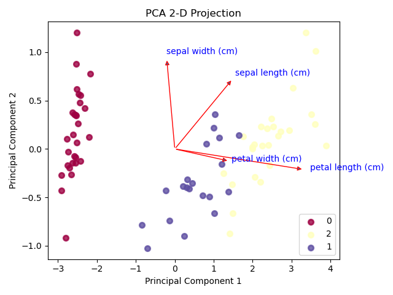
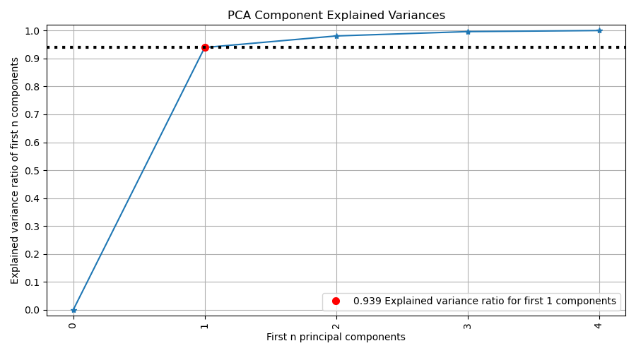

1.3. Decomposition#
This module contains functions for decomposition analysis, including PCA component variance and 2D projections.
This package/module is designed to be compatible with both Python 2 and Python 3. The imports below ensure consistent behavior across different Python versions by enforcing Python 3-like behavior in Python 2.
The scikitplot.decomposition module includes plots built specifically
for scikit-learn estimators that are used for dimensionality reduction
e.g. PCA. You can use your own estimators, but these plots assume specific
properties shared by scikit-learn estimators. The specific requirements are
documented per function.
- scikitplot.decomposition.plot_pca_2d_projection(clf, X, y, title='PCA 2-D Projection', ax=None, figsize=None, title_fontsize='large', text_fontsize='medium', cmap='Spectral', biplot=False, feature_labels=None, dimensions=[0, 1], label_dots=False)[source]#
Plots the 2-dimensional projection of PCA on a given dataset.
- Parameters:
clf (object) – Fitted PCA instance that can
transformgiven data set into 2 dimensions.X (array-like, shape (n_samples, n_features)) – Feature set to project, where n_samples is the number of samples and n_features is the number of features.
y (array-like, shape (n_samples) or (n_samples, n_features)) – Target relative to X for labeling.
title (str, optional, default='PCA 2-D Projection') – Title of the generated plot.
biplot (bool, optional, default=False) – If True, the function will generate and plot biplots. If False, the biplots are not generated.
feature_labels (array-like, shape (n_features), optional, default=None) – List of labels that represent each feature of X. Its index position must also be relative to the features. If None is given, labels will be automatically generated for each feature (e.g. “variable1”, “variable2”, “variable3” …).
ax (matplotlib.axes.Axes, optional, default=None) – The axes upon which to plot. If None, a new set of axes is created.
figsize (tuple of int, optional, default=None) – Size of the figure (width, height) in inches.
title_fontsize (str or int, optional, default='large') – Font size for the plot title.
text_fontsize (str or int, optional, default='medium') – Font size for the text in the plot.
cmap (str or matplotlib.colors.Colormap, optional, default='viridis') – Colormap used for plotting the projection. See Matplotlib Colormap documentation for available options: https://matplotlib.org/users/colormaps.html
- Returns:
The axes on which the plot was drawn.
- Return type:
matplotlib.axes.Axes
Examples
>>> import scikitplot as skplt >>> from sklearn.decomposition import PCA >>> import matplotlib.pyplot as plt >>> pca = PCA(random_state=1) >>> pca.fit(X) >>> skplt.decomposition.plot_pca_2d_projection(pca, X, y) <matplotlib.axes._subplots.AxesSubplot object at 0x7fe967d64490> >>> plt.show()
- scikitplot.decomposition.plot_pca_component_variance(clf, title='PCA Component Explained Variances', ax=None, figsize=None, title_fontsize='large', text_fontsize='medium', target_explained_variance=0.75, x_tick_rotation=90)[source]#
Plots PCA components’ explained variance ratios. (new in v0.2.2)
- Parameters:
clf (object) – PCA instance that has the
explained_variance_ratio_attribute.title (str, optional, default='PCA Component Explained Variances') – Title of the generated plot.
target_explained_variance (float, optional, default=0.75) – Looks for the minimum number of principal components that satisfies this value and emphasizes it on the plot.
ax (matplotlib.axes.Axes, optional, default=None) – The axes upon which to plot the curve. If None, a new set of axes is created.
figsize (tuple of int, optional, default=None) – Tuple denoting figure size of the plot (e.g., (6, 6)).
title_fontsize (str or int, optional, default='large') – Font size for the plot title. Use e.g., “small”, “medium”, “large” or integer-values.
text_fontsize (str or int, optional, default='medium') – Font size for the text in the plot. Use e.g., “small”, “medium”, “large” or integer-values.
x_tick_rotation (int, optional, default=None) – Rotates x-axis tick labels by the specified angle. Defaults to None (automatically set based on orientation).
- Returns:
The axes on which the plot was drawn.
- Return type:
matplotlib.axes.Axes
Examples
>>> import scikitplot as skplt >>> from sklearn.decomposition import PCA >>> import matplotlib.pyplot as plt >>> pca = PCA(random_state=1) >>> pca.fit(X) >>> skplt.decomposition.plot_pca_component_variance(pca) <matplotlib.axes._subplots.AxesSubplot object at 0x7fe967d64490> >>> plt.show()